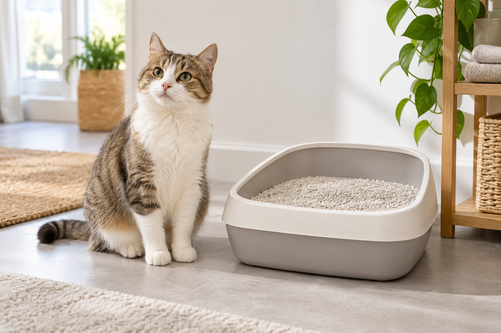

Catsan Hygiene Plus 20L: is this non-clumping litter right for your cat?
A good cat litter should make daily cleaning predictable, control odour and be comfortable enough for your cat to use consistently. Catsan Hygiene Plus is a mineral, non-clumping litter sold in a large 20-litre bag. It is a straightforward choice for owners who prefer removing solid waste daily and replacing the full tray on a regular schedule.
Quick product summary
Catsan Hygiene Plus Cat Litter, White, 20L. The current listing describes a 100% natural, unscented and bleach-free non-clumping litter with mineral granules designed to absorb liquid and help control odour.
Check availability on Amazon UK →Price and availability can change. Confirm the current listing before ordering.
How the litter works
Unlike clumping litter, this product does not form scoopable balls around urine. Its porous mineral granules absorb liquid and lock moisture inside. The manufacturer describes “triple odour protection” using a mineral shield. Solid waste should still be removed every day, while the entire tray needs regular replacement.
| Feature | Practical impact |
|---|---|
| Non-clumping | Simple routine, but full-tray changes are required |
| Unscented | No added perfume competing with household smells |
| 20L bag | Useful for stocking up; heavier to lift and store |
| Suitable for kittens | Listing says it is appropriate for all life stages |
Best for
- Households that prefer non-clumping mineral litter.
- Cats or owners who dislike heavily perfumed litter.
- Single-cat trays with a consistent daily cleaning routine.
- Owners who have dry storage space for a larger bag.
Points to consider
A 20L bag offers convenience but may be awkward for anyone with limited storage or lifting ability. Non-clumping litter can also make it harder to remove urine selectively, so regular complete changes matter. As with any litter switch, introduce it gradually if your cat is sensitive to texture changes, and keep the tray in a quiet, accessible location.
Bottom line
Catsan Hygiene Plus is a sensible match for owners who value an unscented, non-clumping litter and are comfortable with scheduled full-tray changes. The 20L size is best treated as a convenience purchase, provided you can store and handle the bag comfortably.
Check the latest product details
Compare the current price, seller, delivery and pack information on Amazon UK.
View Catsan Hygiene Plus on Amazon →